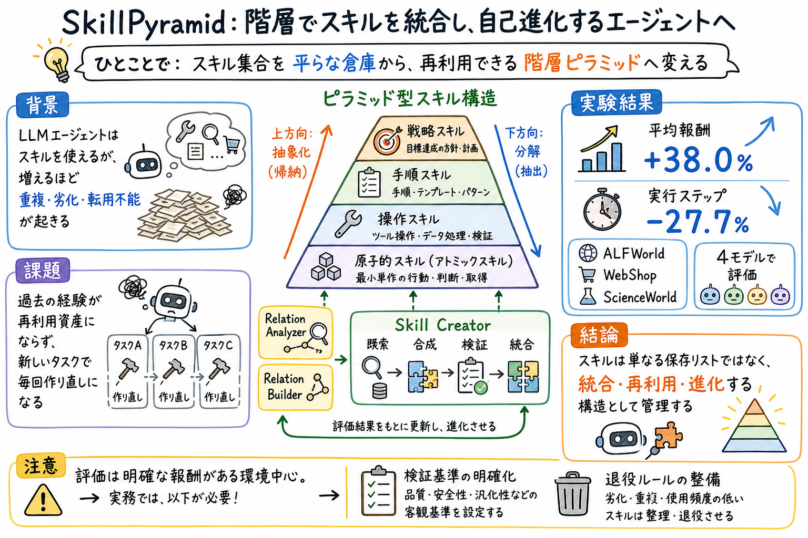

第一の貢献は、agent skill を成長する階層として整理し、明示的な再利用関係と依存関係によって転移性を高める枠組みを提示したこと。

どんな論文か
SkillPyramid の中心問いは、増え続ける agent skill をどう再利用可能な資産へ変えるかである。既存の skill library は、検索対象としては役に立つが、skill の内部にある共通経験を構造化しないと、似た能力を何度も作り直したり、未知タスクへうまく転用できなかったりする。
この論文は、skill 集合を多層のピラミッドとして整理する。下層には細かく再利用できる原子的 skill を置き、上層には複数 skill に共通する抽象的な問題解決パターンを置く。Relation Analyzer と Relation Builder が既存 skill の関係を分析し、下方向の原子的抽出と上方向の抽象帰納で階層を作る。
新しいタスクが来ると、Skill Creator はピラミッドから関連 skill を検索し、上位 skill で解法の骨格を作り、下位 skill で実行手順を埋める。生成した skill は検証され、うまくいったものは既存 skill と接続されてピラミッドへ戻される。これにより skill 集合は静的なリストではなく、使うほど更新される構造になる。
ALFWorld、WebShop、ScienceWorld と 4 つの基盤モデルでの評価では、平均報酬が 38.0% 向上し、実行ステップ数が 27.7% 減った。ReAct+Skills と同じ初期 skill library を使っても SkillPyramid が上回るため、効果は単に skill を持っていることではなく、skill を階層的に統合して再利用することから来ている。
SkillPyramid は、agent skill を保存するだけでなく、再利用関係と抽象度に基づいて階層化する枠組みである。下層にはナビゲーション、検索、観察、測定のような細かい操作に近い能力を置き、上層には複数の task-specific skill に共通する解法パターンを置く。
この設計により、未知タスクに対して、既存 skill をそのまま検索して終わるのではなく、複数 skill の部品を組み合わせて新しい skill を作れる。さらに、検証済みの新 skill は階層へ戻されるため、skill library 自体がタスク経験によって育つ。
課題と貢献
第二の貢献は、Relation Analyzer と Relation Builder による整理機構である。Analyzer は skill の粗いグループ化から詳細分析へ進み、Builder は下方向の原子的 skill 抽出と上方向の抽象 skill 帰納で階層を作る。
Skill Creator が関連 skill を検索し、合成し、生成した skill を検証し、妥当なものをピラミッドへ増分統合する。
手法のしくみ
1
手法は、既存 skill library の分析から始まる。skill は名前、短い説明、内容を持つ自然言語プログラムとして扱われる。Relation Analyzer は、まず名前と説明で粗く skill をグループ化し、次に各グループの内容を読んで、どの skill 群に再利用関係があるかを判断する。
2
Relation Builder は二つの方向で関係を作る。下方向の原子的 skill 抽出では、複数 skill に共通する最小限の能力を取り出し、元 skill がその能力を参照できるようにする。上方向の抽象 skill 帰納では、複数 skill に共通する高レベルの解法構造をまとめ、下位 skill を組み合わせる指針にする。
3
タスク実行時には Skill Creator が、タスクの意味、適用条件、ピラミッド内の制約を見ながら関連 skill を検索する。既存 skill がタスクを完全に覆うなら再利用し、足りなければ抽象 skill で骨格を作り、原子的 skill で具体操作を埋めて新しい skill を合成する。
4
生成した skill はそのまま追加されるのではなく、実行と検証を経て、関連する既存 skill と結びつけられる。全体を作り直さずに、差分だけをピラミッドへ挿入するのが自己進化のポイントである。
検証結果
比較対象は ReAct、Reflexion、ExpeL、ReAct+Skills で、ReAct+Skills と SkillPyramid は同じ初期 skill library を使う。モデルは DeepSeek-V3.2、GPT-4.1、Gemini 2.5 Pro、Qwen3-235B。
ReAct は 53.4、Reflexion は 59.6、ExpeL は 61.3、ReAct+Skills は 65.8 だった。未知タスクでも SkillPyramid は 84.8 で、ReAct+Skills の 73.9 を上回った。
平均ステップ数は SkillPyramid が 14.6、ReAct が 20.2、Reflexion が 18.5、ExpeL が 17.4、ReAct+Skills が 17.7。階層的な skill 再利用によって、より短い行動列で成功状態へ到達しやすくなったと読める。
除去実験では、原子的 skill、抽象 skill、自己進化のいずれを外しても性能が下がる。特に、ピラミッドを使わず新 skill をゼロから生成する設定は大きく悪化し、skill 生成は既存構造へ接地して行う必要があることを示している。
限界と読みどころ
この論文の結果は、報酬や成功率、ステップ数が比較的明確に定義できる環境で得られている。実務の skill 運用では、品質、安全性、作業時間、ユーザーの好み、保守性などが絡むため、検証基準をそのまま移すことはできない。
階層化は強いが、誤った抽象 skill が作られると、広い範囲のタスクへ悪影響が出る可能性がある。実運用では、レビュー、ロールバック、退役、利用頻度の観測、重複統合のルールと組み合わせる必要がある。
おい丸の skill 運用に引き寄せるなら、learn-from-logs の出力をすべて追記するのではなく、新規 skill、既存 skill への統合、原子的ルール、上位運用指針、退役候補へ分ける設計に使える。
読みながら見る図表や節
- Figure 1 は、flat skill library と SkillPyramid の対比を見る図である。未知タスクに完全一致する skill がない場合、平らな library では探索し直しになりやすいが、SkillPyramid では既存 skill の部品を組み合わせて新しい skill を作る。
- Figure 2 は、手法全体の流れを見る図である。既存 skill library を分析し、下方向の原子的 skill 抽出と上方向の抽象 skill 帰納で階層を作り、Skill Creator がタスクに応じて skill を合成し、検証済み skill をピラミッドへ戻す。
- Table 1 は主要結果で、同じ初期 skill library を持つ ReAct+Skills より SkillPyramid が高い報酬と少ないステップ数を出す点が重要である。Figure 3 は自己進化の曲線で、append-only や static よりも、階層へ統合する構成が後半で安定することを示す。
次に読むなら
- 次に読むなら、skill lifecycle 全体を見る MUSE-Autoskill、単一 skill 文書を検証ゲート付きで改善する SkillOpt、skill を作成・評価・接続する SkillNet が近い。
- 実装へ落とすなら、まず既存 skill を具体タスク skill、原子的操作 skill、上位運用 skill に分ける小さな台帳から始めるのがよい。そこに利用頻度、失敗ログ、統合候補、退役候補を持たせると、SkillPyramid 的な運用へ近づく。
読後Q&A
SkillPyramid は何を解こうとしている？
増え続ける agent skill を、重複した保存リストではなく、再利用できる階層構造へ変える問題を扱っている。既存 skill の内部にある共通経験を、原子的 skill と抽象 skill として取り出し、新しいタスクへ組み合わせて使えるようにする。
SkillOpt とは何が違う？
SkillOpt は 1 つの skill 文書を rollout と検証で改善する手法。SkillPyramid は複数 skill の集合を階層化し、検索・合成・検証・統合で skill repository 全体を進化させる手法。上位設計としては SkillPyramid、個別 skill の磨き込みとしては SkillOpt と見るとわかりやすい。
原子的 skill と抽象 skill はどう違う？
原子的 skill は、複数タスクで使い回せる小さな操作能力。抽象 skill は、複数 skill に共通する問題解決の流れやタスク分解の指針。前者は実行を助け、後者は組み合わせ方を助ける。
結果はどのくらい良かった？
ALFWorld、WebShop、ScienceWorld と 4 つのモデルで、平均報酬は 38.0% 向上し、実行ステップ数は 27.7% 減った。平均報酬では SkillPyramid が 73.7 で、同じ初期 skill library を使う ReAct+Skills の 65.8 を上回った。
flat skill library ではなぜ足りない？
flat library では既存 skill をそのまま検索するだけになりやすい。未知タスクに完全一致する skill がないと、過去の経験をうまく使えない。SkillPyramid は skill の共通部品と抽象パターンを取り出すので、既存 skill を再結合できる。
実務の Codex skills に使える？
そのまま自動適用するには検証基準が必要だが、台帳設計にはかなり使える。skill を具体タスク、原子的操作、上位運用指針に分け、ログから得た学びをどの層へ入れるか判断する運用にできる。
一番の注意点は？
誤った抽象 skill を作ると、広い範囲へ悪影響が出る点。階層化は便利だが、レビュー、ロールバック、退役ルール、利用頻度の観測とセットで使う必要がある。
おい丸運用に引き寄せるなら？
learn-from-logs の出力を全部 MEMORY に追記するのではなく、新規 skill、既存 skill への統合、原子的ルール、上位の運用指針、退役候補に分ける。その分類を skill 台帳に持たせると、SkillPyramid 的な運用へ近づく。